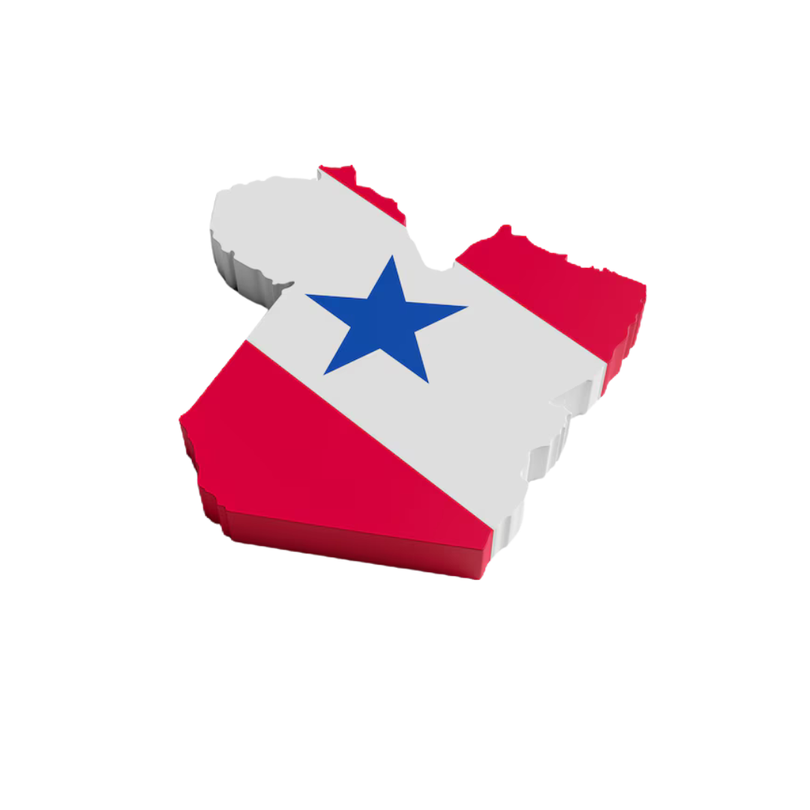

⚠️ Você está offline. O mapa pode não funcionar corretamente.
Descrição: Produto básico da alimentação local, utilizado em diversas receitas típicas.
Principais Clientes: Belém (PA), São Paulo (SP), Recife (PE)
Cidades Relevantes: Santarém (PA), Almeirim (PA)

Valor gerado: R$ 5,93 bilhões
Descrição: Produto típico da região amazônica, com alta demanda no Brasil e no exterior. Produzido de forma sustentável.
Principais Clientes: São Paulo (SP), Nova York (EUA), Paris (França)
Cidades Relevantes: Belém (PA), Santarém (PA)

Valor gerado: R$ 520 milhões
Descrição: Consumido in natura ou na indústria de sucos e conservas. Região de Paragominas destaca-se como maior polo produtor.
Principais Clientes: São Paulo (SP), Belo Horizonte (MG), Brasília (DF)
Cidades Relevantes: Paragominas (PA), Capitão Poço (PA)

Valor gerado: R$ 8,32 bilhões
Descrição: Alta demanda para ração animal, óleo vegetal e biocombustíveis. Produção mecanizada.
Principais Clientes: Xangai (China), Hamburgo (Alemanha), Jacarta (Indonésia)
Cidades Relevantes: Redenção (PA), Conceição do Araguaia (PA)

Valor gerado: R$ 3,74 bilhões
Descrição: Produzido tanto para consumo humano quanto ração animal, com destaque para a safra de milho safrinha.
Principais Clientes: Cairo (Egito), Tóquio (Japão), Seul (Coreia do Sul)
Cidades Relevantes: Paragominas (PA), Ulianópolis (PA)

Valor gerado: R$ 150 milhões
Descrição: Expansão das áreas de cultivo, atendendo à demanda interna por farinha de trigo.
Principais Clientes: Buenos Aires (Argentina), Luanda (Angola), Roma (Itália)
Cidades Relevantes: Dom Eliseu (PA), Rondon do Pará (PA)

Valor gerado: R$ 470,7 milhões
Descrição: Produto com grande demanda para exportação. Principal produtor é Tomé-Açu.
Principais Clientes: Nova York (EUA), Berlim (Alemanha), Toronto (Canadá)
Cidades Relevantes: Tomé-Açu (PA), Acará (PA)

Valor gerado: Alto valor agregado em mercados internacionais
Descrição: Produto extrativo, exportado principalmente para os EUA e Europa, valorizado por suas qualidades nutricionais.
Principais Clientes: EUA, Alemanha, Japão
Cidades Relevantes: Marabá (PA), Abaetetuba (PA)

Valor gerado: R$ 15 bilhões
Descrição: A cana-de-açúcar é processada para produção de açúcar, etanol e bioeletricidade, essencial para a economia da região.
Principais Clientes: China, Emirados Árabes, Indonésia
Cidades Relevantes: Tailândia (PA), Moju (PA)

Descrição: Utilizada na alimentação local e em derivados como farinha, goma e tapioca.
Principais Clientes: Belém (PA), Manaus (AM), Macapá (AP)
Cidades Relevantes: Santarém (PA), Juruti (PA)

Descrição: Cultivado em sistemas agroflorestais, o cacau do Pará é valorizado pela qualidade e sustentabilidade, utilizado na fabricação de chocolates premium.
Principais Clientes: Bélgica, França, Estados Unidos
Cidades Relevantes: Medicilândia (PA), Uruará (PA)

Descrição: Cultivado principalmente em sistemas irrigados e nas áreas de várzea, o arroz é uma das principais fontes de alimento para a região.
Principais Clientes: São Paulo (SP), Fortaleza (CE), Recife (PE)
Cidades Relevantes: Santarém (PA), Monte Alegre (PA)

- Brasil: Belém (PA), São Paulo (SP), Recife (PE)
- Internacional: Argentina, Estados Unidos
- Brasil: São Paulo (SP), Manaus (AM), Belém (PA)
- Internacional: Nova York (EUA), Paris (França), Londres (Reino Unido)
- Brasil: São Paulo (SP), Belo Horizonte (MG), Brasília (DF)
- Internacional: Estados Unidos, Europa
- Brasil: São Paulo (SP), Rio de Janeiro (RJ), Goiás (GO)
- Internacional: Xangai (China), Hamburgo (Alemanha), Jacarta (Indonésia)
- Brasil: São Paulo (SP), Fortaleza (CE), Recife (PE)
- Internacional: Cairo (Egito), Tóquio (Japão), Seul (Coreia do Sul)
- Brasil: Belém (PA), São Paulo (SP), Recife (PE)
- Internacional: Nova York (EUA), Berlim (Alemanha), Toronto (Canadá)
- Internacional: EUA, Alemanha, Japão
- Internacional: China, Emirados Árabes, Indonésia
- Brasil: Belém (PA), Manaus (AM), Macapá (AP)
- Internacional: Bélgica, França, Estados Unidos
- Brasil: São Paulo (SP), Fortaleza (CE), Recife (PE)
- Brasil: Paraná (PR), Rio Grande do Sul (RS), São Paulo (SP)
- Internacional: Buenos Aires (Argentina), Luanda (Angola), Roma (Itália)
- Região Norte: Santarém (PA), Almeirim (PA)
- Região Norte: Belém (PA), Santarém (PA)
- Região Norte: Paragominas (PA), Capitão Poço (PA)
- Região Sul: Redenção (PA), Conceição do Araguaia (PA)
- Região Sul: Paragominas (PA), Ulianópolis (PA)
- Região Sul: Dom Eliseu (PA), Rondon do Pará (PA)
- Região Leste: Tomé-Açu (PA), Acará (PA)
- Região Leste: Marabá (PA), Abaetetuba (PA)
- Região Leste: Tailândia (PA), Moju (PA)
- Região Oeste: Santarém (PA), Juruti (PA)
- Região Oeste: Medicilândia (PA), Uruará (PA)
- Região Oeste: Santarém (PA), Monte Alegre (PA)